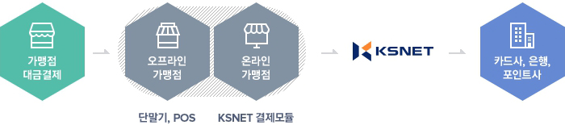

신용(체크)카드, 직불카드, 포인트카드, 전자화폐,
현금영수증 등 대금을 지급할 때, 결제 수단의 신용상태를
조회한 후 승인 결과를 중계 전송하는 서비스
카드결제 시스템 안내
KSVAN소개
KSVAN
신용카드를 포함하여 다양한 결제수단으로 가맹점에서
POS 및 신용카드 단말기 등을 통해 물품 또는 서비스 대금을 결제할 때,
고객의 신용 및 한도를 체크하여 결제를 승인하는 서비스입니다.
서비스 영역
승인중계
카드사가 가맹점에 매출대금을 지급할 수 있도록
카드 결제 내역을 카드사에 전송하여 주는 서비스
KSVAN 특징
-
- 종합결제 서비스
- 오프라인, 온라인, 모바일 등 전 영역에
걸쳐 결제 서비스 제공
-
- 연중 무휴 결제 서비스
- 365일 24시간 서비스 제공으로 고객들이
편리하게 결제할 수 있는 서비스 제공
-
- 실용적인 부가서비스
- 마이장부, 멤버십, DCC, 주류구매카드,
외상장부 등 결제관련 다양하고 편리한
부가서비스 제공
-
- 안전한 결제시스템
- 업계 최고의 보안시스템 구축, 실시간
모니터링 진행